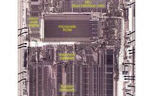

Hacker News: Front Page
フィード

OpenAI's Sam Altman says it would be 'ill-advised' to go public in 2026
Hacker News: Front Page
Article URL: https://techcrunch.com/2026/09/12/openais-sam-altman-says-it-would-be-ill-advised-to-go-public-in-2026/Comments URL: https://news.ycombinator.com/item?id=49676849Points: 13# Comments: 10
2時間前

Real-SWE: Benchmarking AI models on private, real-world, enterprise codebases
Hacker News: Front Page
Article URL: https://withspecific.com/benchmarks/real-sweComments URL: https://news.ycombinator.com/item?id=49676820Points: 33# Comments: 22
2時間前
Benchmark: CadQuery vs. OpenSCAD for agentic CAD work
Hacker News: Front Page
Article URL: https://modelrift.com/blog/cadquery-vs-openscad/Comments URL: https://news.ycombinator.com/item?id=49676577Points: 22# Comments: 24
2時間前
LG Says We're Fake News [video] 6
6
Hacker News: Front Page
Article URL: https://www.youtube.com/watch?v=ToP9xfLDSMEComments URL: https://news.ycombinator.com/item?id=49676324Points: 45# Comments: 5
3時間前
Linux Zoom client proactively reading everything written to X11 clipboard
Hacker News: Front Page
Article URL: https://hachyderm.io/@simontatham/117201594980991062Comments URL: https://news.ycombinator.com/item?id=49675902Points: 77# Comments: 21
3時間前

Will There Be a 7G?
Hacker News: Front Page
Article URL: https://arxiv.org/abs/2609.01877Comments URL: https://news.ycombinator.com/item?id=49674498Points: 63# Comments: 109
5時間前
Make your first edit to OpenStreetMap 1
Hacker News: Front Page
Article URL: https://high5apps.github.io/josm-plugin-website-wizard/Comments URL: https://news.ycombinator.com/item?id=49674050Points: 231# Comments: 65
6時間前

Microcode in Intel's 8087 floating-point chip: the scale instruction
Hacker News: Front Page
Article URL: https://www.righto.com/2026/09/8087-microcode-reverse-engineering-fscale.htmlComments URL: https://news.ycombinator.com/item?id=49673580Points: 69# Comments: 21
6時間前
Nvidia is the central bank of AI
Hacker News: Front Page
https://archive.ph/kt50VComments URL: https://news.ycombinator.com/item?id=49673098Points: 311# Comments: 213
7時間前
I made a build visualizer to understand Bun's compile times
Hacker News: Front Page
Article URL: https://lalitm.com/post/buildprof/Comments URL: https://news.ycombinator.com/item?id=49672842Points: 70# Comments: 13
7時間前
We must pace the frontier 20
Hacker News: Front Page
Article URL: https://darioamodei.com/post/we-must-pace-the-frontierComments URL: https://news.ycombinator.com/item?id=49672510Points: 449# Comments: 618
8時間前
A Mathematical Framework for Transformer Circuits (2021) 6
Hacker News: Front Page
Article URL: https://transformer-circuits.pub/2021/framework/index.htmlComments URL: https://news.ycombinator.com/item?id=49672365Points: 69# Comments: 16
8時間前
How Trail of Bits helps verify the integrity of Signal chats
Hacker News: Front Page
Article URL: https://blog.trailofbits.com/2026/08/11/how-trail-of-bits-helps-verify-the-integrity-of-your-signal-chats/Comments URL: https://news.ycombinator.com/item?id=49671237Points: 38# Comments: 14
11時間前
The worst spam emails: iLands AI agent hustle
Hacker News: Front Page
Article URL: https://tedium.co/2026/09/11/ilands-agents-email-spam-kaixin-tang/Comments URL: https://news.ycombinator.com/item?id=49671159Points: 98# Comments: 43
11時間前
Retrospectively Reverse-Engineering Apple's Neural Engine 2
Hacker News: Front Page
Article URL: https://eiln.github.io/posts/ane.htmlComments URL: https://news.ycombinator.com/item?id=49670032Points: 209# Comments: 29
14時間前
Navier-Stokes Announcement
Hacker News: Front Page
Article URL: https://www.claymath.org/news/navier-stokes-announcement/Comments URL: https://news.ycombinator.com/item?id=49668706Points: 297# Comments: 237
18時間前
google.com/goto: Google's anti-scraping update 2
Hacker News: Front Page
Article URL: https://www.autom.dev/blog/google-search-goto-linksComments URL: https://news.ycombinator.com/item?id=49668386Points: 618# Comments: 479
19時間前
Android NAT-T keepalive offload bypasses VPN lockdown
Hacker News: Front Page
https://mullvad.net/en/blog/another-way-to-leak-traffic-on-a...Comments URL: https://news.ycombinator.com/item?id=49665502Points: 158# Comments: 42
1日前
λ Snap – An inviting programming language for kids and adults for CS study 22
Hacker News: Front Page
Article URL: https://snap.berkeley.edu/Comments URL: https://news.ycombinator.com/item?id=49662214Points: 170# Comments: 107
1日前
I fixed a tractor using John Deere's self-repair service. Farmers aren't sold
Hacker News: Front Page
https://web.archive.org/web/20260911105205/https://www.wired...https://archive.ph/1xTJ3Comments URL: https://news.ycombinator.com/item?id=49658672Points: 84# Comments: 97
1日前